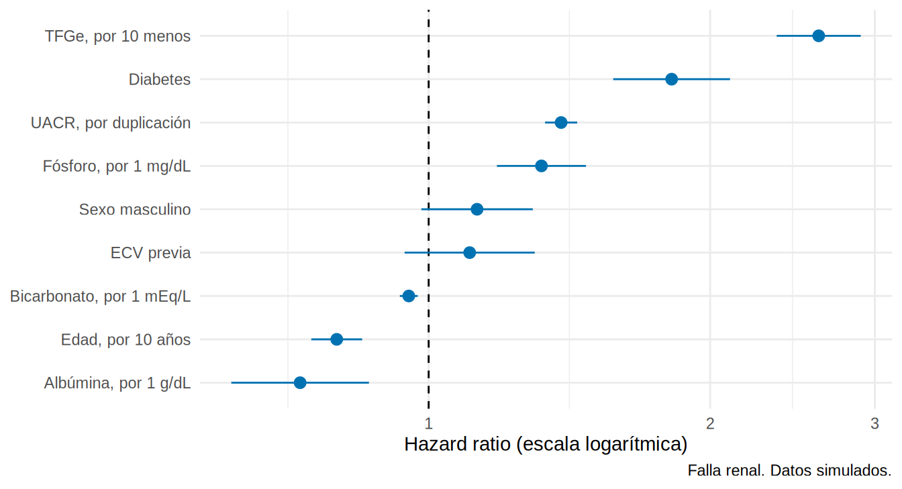
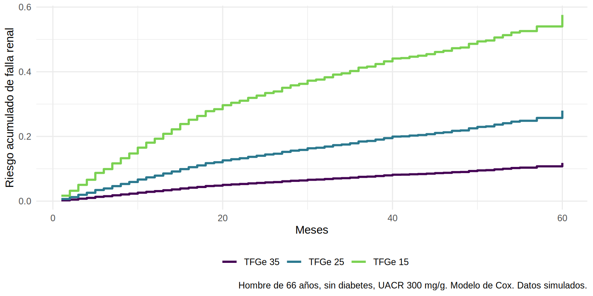

Regresión de Cox
El modelo
El modelo de riesgos proporcionales de Cox relaciona el riesgo instantáneo (hazard) de un paciente con sus covariables:
\[ h(t \mid X) = h_0(t)\,\exp(\beta_1 X_1 + \beta_2 X_2 + \dots + \beta_p X_p) \]
- \(h_0(t)\) es el riesgo basal, que no se especifica (por eso es “semiparamétrico”).
- \(e^{\beta_j}\) es el cociente de riesgos instantáneos (hazard ratio, HR): por cuánto se multiplica el riesgo en cada instante al aumentar \(X_j\) en una unidad, manteniendo constantes las demás.
- Proporcionalidad: el HR no cambia con el tiempo (se verifica en 9.4).
HR = 1.6 significa que, en cualquier momento, entre quienes siguen en riesgo, el paciente con ese factor tiene un riesgo instantáneo 60 % mayor.
Modelo simple y ajustado
Call:
coxph(formula = Surv(tiempo_meses, krt) ~ dm, data = coh)
n= 3000, number of events= 839
coef exp(coef) se(coef) z Pr(>|z|)
dmCon DM 0.74207 2.10028 0.06952 10.68 <2e-16 ***
---
Signif. codes: 0 '***' 0.001 '**' 0.01 '*' 0.05 '.' 0.1 ' ' 1
exp(coef) exp(-coef) lower .95 upper .95
dmCon DM 2.1 0.4761 1.833 2.407
Concordance= 0.604 (se = 0.009 )
Likelihood ratio test= 114 on 1 df, p=<2e-16
Wald test = 114 on 1 df, p=<2e-16
Score (logrank) test = 119.2 on 1 df, p=<2e-16El HR crudo de la diabetes es ~2.1 (IC 1.8-2.4): el riesgo instantáneo de falla renal es más del doble en pacientes con diabetes. Ahora ajustamos por las variables clínicas que nos importan. Escalamos para facilitar la lectura: TFGe por cada 10 unidades menos, edad por 10 años, UACR en logaritmo base 2 (cada unidad = duplicar la UACR):
cox_aj <- coxph(
Surv(tiempo_meses, krt) ~ dm + I((27 - tfg) / 10) + log2(uacr) + I(edad / 10) + sexo +
albumina + fosforo + bicarbonato + ecv,
data = coh
)
tidy(cox_aj, exponentiate = TRUE, conf.int = TRUE) |>
select(term, HR = estimate, conf.low, conf.high, p.value) |>
mutate(term = recode(term, dmCon_DM = "Diabetes", `dmCon DM` = "Diabetes",
`I((27 - tfg)/10)` = "TFGe, por 10 unidades menos", `log2(uacr)` = "UACR, por cada duplicación",
`I(edad/10)` = "Edad, por 10 años", sexoHombre = "Sexo masculino",
albumina = "Albúmina, por 1 g/dL", fosforo = "Fósforo, por 1 mg/dL",
bicarbonato = "Bicarbonato, por 1 mEq/L", ecv = "ECV previa"),
across(where(is.numeric), \(x) round(x, 3)))# A tibble: 9 × 5
term HR conf.low conf.high p.value
<chr> <dbl> <dbl> <dbl> <dbl>
1 Diabetes 1.82 1.58 2.1 0
2 TFGe, por 10 unidades menos 2.61 2.36 2.90 0
3 UACR, por cada duplicación 1.39 1.33 1.44 0
4 Edad, por 10 años 0.797 0.749 0.849 0
5 Sexo masculino 1.13 0.982 1.29 0.089
6 Albúmina, por 1 g/dL 0.729 0.615 0.863 0
7 Fósforo, por 1 mg/dL 1.32 1.18 1.47 0
8 Bicarbonato, por 1 mEq/L 0.952 0.932 0.973 0
9 ECV previa 1.11 0.942 1.30 0.217Cómo leer los HR:
- TFGe: por cada 10 mL/min/1.73 m² menos, el riesgo instantáneo se multiplica por ~2.6.
- UACR: cada duplicación de la albuminuria multiplica el riesgo por ~1.4.
- Edad: a igual TFGe y UACR, ser mayor reduce el riesgo de falla renal (HR ~0.8 por década): muchos pacientes mayores mueren antes de llegar a diálisis (riesgo competitivo, 9.5).
- Albúmina, fósforo y bicarbonato actúan en la dirección esperada.
- Sexo y ECV no se asocian de forma clara con falla renal al ajustar (IC que incluyen 1).
- Un HR de 2 no significa “el doble de pacientes con diálisis” ni “llegan en la mitad del tiempo”.
- El HR es un cociente de tasas instantáneas y, como el OR, no es colapsable: cambia al agregar covariables aunque no haya confusión.
- Como compara a quienes siguen en riesgo, tiene una selección incorporada con el tiempo (Hernán 2010). Para efectos causales a un tiempo fijo conviene riesgos acumulados (9.5) o RMST (9.6).
Variables continuas, categóricas y escala
- La edad por 10 años, o la TFGe por 10 unidades, evitan HR minúsculos que “parecen” no tener efecto.
- Con
log2(uacr)cada unidad es una duplicación: interpretación natural para variables logarítmicas. - Con categorías (A1, A2, A3), R toma la primera como referencia:
relevel()ofct_relevel()para cambiarla. - La linealidad en el log-HR se revisa con splines:
coxph(... + pspline(tfg))ons(tfg, 3)(8.5).
coh <- coh |> mutate(cat_a = cut(uacr, c(0, 30, 300, Inf), right = FALSE, labels = c("A1", "A2", "A3")))
cox_a <- coxph(Surv(tiempo_meses, krt) ~ cat_a + I((27 - tfg) / 10) + I(edad / 10) + dm, data = coh)
tidy(cox_a, exponentiate = TRUE, conf.int = TRUE) |> select(term, HR = estimate, conf.low, conf.high) |>
mutate(across(where(is.numeric), \(x) round(x, 2)))# A tibble: 5 × 4
term HR conf.low conf.high
<chr> <dbl> <dbl> <dbl>
1 cat_aA2 2.72 1.12 6.62
2 cat_aA3 6.95 2.88 16.8
3 I((27 - tfg)/10) 2.97 2.7 3.27
4 I(edad/10) 0.83 0.78 0.88
5 dmCon DM 2.04 1.78 2.35Gráfico de bosque (forest plot)
etiquetas <- c(`dmCon DM` = "Diabetes", `I((27 - tfg)/10)` = "TFGe, por 10 menos", `log2(uacr)` = "UACR, por duplicación",
`I(edad/10)` = "Edad, por 10 años", sexoHombre = "Sexo masculino", albumina = "Albúmina, por 1 g/dL",
fosforo = "Fósforo, por 1 mg/dL", bicarbonato = "Bicarbonato, por 1 mEq/L", ecv = "ECV previa")
tidy(cox_aj, exponentiate = TRUE, conf.int = TRUE) |>
mutate(term = recode(term, !!!etiquetas), term = fct_reorder(term, estimate)) |>
ggplot(aes(estimate, term, xmin = conf.low, xmax = conf.high)) +
geom_vline(xintercept = 1, linetype = "dashed") +
geom_pointrange(color = "#0072B2") +
scale_x_log10() +
labs(x = "Hazard ratio (escala logarítmica)", y = NULL, caption = "Falla renal. Datos simulados.") +
theme_minimal(base_size = 11)
Predecir curvas de supervivencia para perfiles de pacientes
El modelo de Cox permite estimar la curva de un paciente específico. Es la base de las calculadoras de riesgo (Cap. 17):
perfiles <- tibble(
dm = factor(c("Sin DM", "Sin DM", "Sin DM"), levels = levels(coh$dm)),
tfg = c(35, 25, 15), uacr = 300, edad = 66, sexo = factor("Hombre", levels = levels(coh$sexo)),
albumina = 4, fosforo = 3.7, bicarbonato = 23, ecv = 0
)
sf <- survfit(cox_aj, newdata = perfiles)
tidy(sf) |>
pivot_longer(starts_with("estimate."), names_to = "perfil", values_to = "supervivencia") |>
mutate(perfil = factor(perfil, levels = paste0("estimate.", 1:3), labels = paste("TFGe", perfiles$tfg))) |>
ggplot(aes(time, 1 - supervivencia, color = perfil)) +
geom_step(linewidth = 1) +
scale_color_viridis_d(end = 0.8, name = NULL) +
labs(x = "Meses", y = "Riesgo acumulado de falla renal",
caption = "Hombre de 66 años, sin diabetes, UACR 300 mg/g. Modelo de Cox. Datos simulados.") +
theme_minimal(base_size = 11) + theme(legend.position = "bottom")
Variantes útiles
Estratificación: otro riesgo basal por grupo
Cuando una variable no cumple proporcionalidad y no te interesa su HR, se estratifica: cada estrato tiene su propio \(h_0(t)\).
Errores robustos y conglomerados
Si hay pacientes agrupados (centros de diálisis), cluster() da errores estándar robustos:
Empates
Con tiempos medidos en meses enteros hay empates (varios eventos en el mismo mes). R usa por defecto la aproximación de Efron, adecuada casi siempre.
Tiempo-dependientes
Variables que cambian durante el seguimiento (TFGe actualizada, inicio de un fármaco) se incluyen con la estructura (tstart, tstop] (survSplit() o tmerge()). Se verá en el Cap. 19 junto con los métodos g.
Cuántas variables caben: eventos por variable
Como en la logística (8.3): al menos 10-20 eventos por parámetro. Con 839 eventos y 9 parámetros hay holgura. En cohortes pequeñas, limita el número de covariables a los confusores esenciales.
¿Efecto causal? Lo que el HR no resuelve
Un HR ajustado es una asociación; para interpretarlo como efecto causal se necesita lo de siempre: intercambiabilidad condicional (confusores medidos), consistencia, positividad y ausencia de sesgo de selección. Además, el HR cambia de significado con el tiempo si el riesgo no es proporcional, y el uso de variables post-tratamiento (como la TFGe a los 6 meses) rompe la interpretación. El Cap. 12 presenta alternativas (riesgos acumulados estandarizados, IPW, AIPW).
- Cox estima HR: cociente de riesgos instantáneos, constante en el tiempo bajo proporcionalidad.
- Reescala las variables (por 10 años,
log2) y reporta HR con IC en tabla o gráfico de bosque. - Puedes predecir curvas de perfiles con
survfit(modelo, newdata = ...). -
Estratifica (
strata()) cuando una variable no cumple proporcionalidad; usacluster()con datos agrupados. - HR ≠ riesgo relativo ni “tiempo”: complementa con riesgos acumulados y RMST.
- Hace falta ≥ 10-20 eventos por parámetro.
Ejercicio
- Ajusta un modelo de Cox para muerte (
estado == 2, tratando la falla renal como censura). ¿Qué variables se asocian? ¿Es la edad ahora un factor de riesgo? - Calcula el HR de la diabetes ajustando solo por TFGe y UACR. ¿Cambia mucho respecto del modelo completo?
- Dibuja las curvas de riesgo acumulado predichas para dos pacientes: uno con UACR 30 y otro con UACR 1 000, con el resto de las variables iguales.